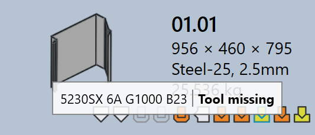

Gereedschapsstatus
In TruSmartCAM geeft elke onderdeeltegel visueel de gereedschapsstatus van dat onderdeel voor alle beschikbare machines aan. Dit helpt gebruikers om snel te zien voor welke machines een onderdeel van gereedschap is voorzien, en of het gereedschap klaar is, beoordeling vereist of ontbreekt.
-
De gereedschapsstatus wordt direct op de onderdeeltegel weergegeven met behulp van pictogrammen en kleur- indicatoren.
-
Elk pictogram vertegenwoordigt een machinetechnologie (bijv. Punching, Laser).
-
De kleur van het pictogram geeft de huidige gereedschapsstatus voor die machine aan.
De onderstaande tabel legt de betekenis van elk pictogram en kleur uit, waarmee gebruikers de gereedschapsstatus nauwkeurig kunnen interpreteren.

| Machinepictogram | Beschrijving |
|---|---|
|
Laser snijmachine |
|
Pons machine |
|
Persrem |
|
Paneel buigmachine |
| Gereedschapsstatus | Beschrijving |
|---|---|
|
Gereedschap is ok |
|
Gereedschap heeft waarschuwingen |
|
Gereedschap heeft fouten |
|
Gereedschap niet beschikbaar |
Gereedschapsfouten
Een CAM (Computer-Aided Manufacturing) fout treedt op tijdens de gereedschaps- of productievoorbereidi ngsfase. Deze fouten ontstaan door problemen zoals gereedschaps- botsingen, ontbrekende gereedschappen of ongeldige snijvoorwaarden.
Buiggereedschapsfouten
-
Botsingen gedetecteerd en Grijperfout : De buigopstelling veroorzaakt gereedschaps- of gripperbotsingen tijdens simulatie.


-
Overbelastingsfout en Smalle flens of uitsparing te dichtbij : De buiggereedschappen zijn overbelast, of gaten bevinden zich te dicht bij de buiglijn, wat het onderdeel of gereedschappen kan beschadigen.


-
Moet worden bekeken en Korte stempel/matrijs spanne : De gereedschapsopstelling vereist handmatige inspectie, of de geselecteerde matrijs/ponsoverspanning is kleiner dan vereist voor het onderdeel.


-
Uitrusting niet toegewezen, Slechte achteraanslag, of Part too big for this machine : Vereiste buiggereedschappen zijn niet beschikbaar, de achteraanslag is niet correct geconfigureerd, of het onderdeel is te groot voor de geselecteerde machine.


Snijgereedschapsfouten
-
Ontbrekende snijvoorwaarde : De snijconditie is niet toegewezen aan het grondmateriaal, dus snijden kan niet worden uitgevoerd.

-
Niet uitgeruste of gedeeltelijk uitgeruste contouren : Sommige vormen of randen worden gemist of slechts gedeeltelijk bedekt tijdens het gereedschapsproces, waardoor het onderdeel onvolledig is voor het snijden.